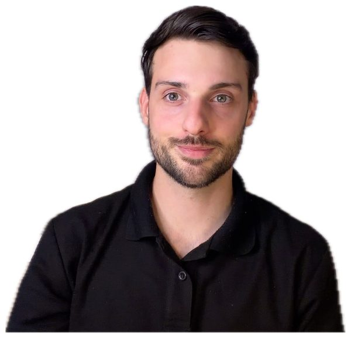

01
Clases individuales
50 min personalizadas, centradas en conversación y pensadas para adultos.
Tu profesor de francés online
Aprender francés no tiene por qué ser complicado.
Reservar una clase de prueba
Francés claro · desde el españolHola, soy Dylan
Hola, soy Dylan, profesor de francés especializado en alumnos hispanohablantes. Graduado en comercio y apasionado por los idiomas, aprendí español de forma totalmente autodidacta sobre el terreno. Esa experiencia cambió por completo mi forma de enseñar.
Olvídate de memorizar reglas gramaticales abstractas e interminables (como las mil excepciones de un tiempo verbal). Utilizo los puentes naturales entre el español y el francés para darte tips concisos, directos y aplicables desde el primer día.
Reservar una clase de pruebaUna forma práctica de avanzar
Piénsalo así: nadie aprende a correr leyendo manuales teóricos sobre biomecánica, se aprende saliendo a correr. Con el francés es exactamente igual.
Partimos de lo que ya conoces en español para construir conexiones útiles en francés. Así avanzas con explicaciones sencillas, práctica real y menos teoría innecesaria.
Un acompañamiento sencillo
Todo está pensado para que puedas practicar, entender y usar el francés desde el principio.
50 min personalizadas, centradas en conversación y pensadas para adultos.
PDF y ejercicios escritos para seguir practicando entre una clase y otra.
Formaciones autónomas para avanzar a tu ritmo, cuando estén disponibles.
Un camino posible
Una progresión clara para pasar de A1 a B2 con objetivos accesibles, rápidos y lógicos.
La experiencia de mis alumnos
Tu siguiente paso
Empieza a practicar con una clase o descubre los ejercicios de Frenchois.